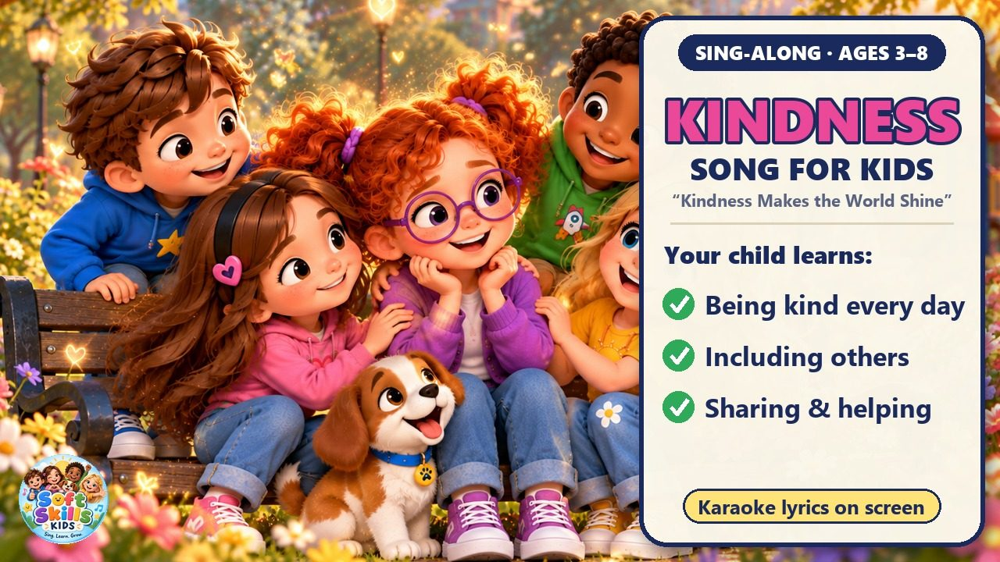
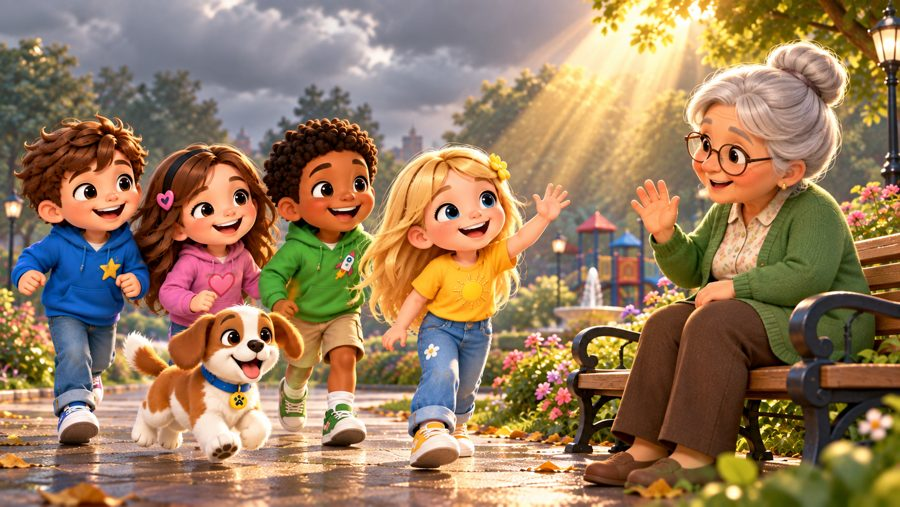
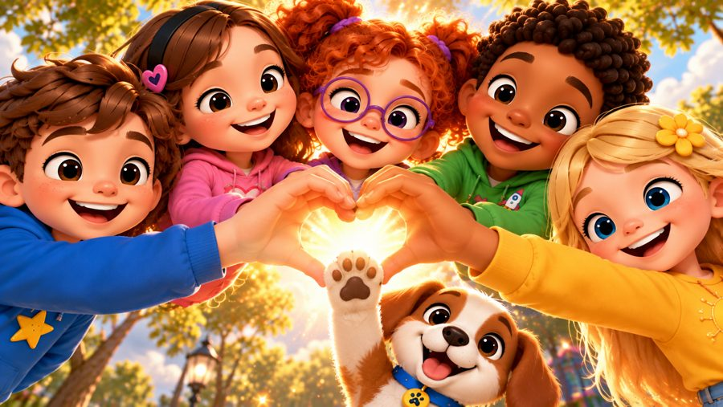
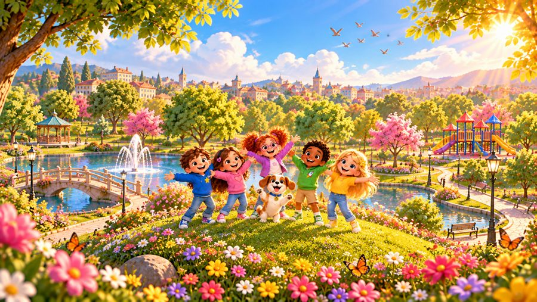
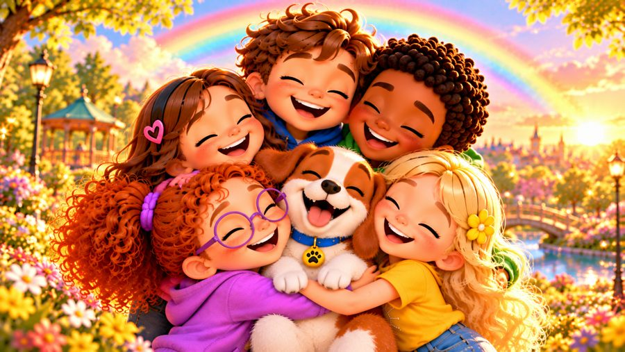

Kindness Makes the World Shine
A happy kindness song for kids! 🌈 Sing along with Max, Mia, Jay, Lily, new friend Rosie and Buddy the puppy as every kind act brings colour back to a grey park — because kindness makes the world shine!
"Kindness Makes the World Shine" is a fun sing-along kids song about being kind, including others, sharing, helping and caring. With big karaoke lyrics on screen, it's perfect for preschool, kindergarten and early elementary kids (ages 3–8), at home or in the classroom.

▶💡 Why this skill matters: kindness
Kindness helps children make friends, feel safe and build a warm classroom and home. Small kind acts also make the child who does them feel happier and more confident. Notice and name kindness when you see it (“That was kind — look how she smiled!”) and do a small kind act together every day.
👨👩👧 What your child learns
- Small acts of kindness — a smile, a hello, a helping hand
- Including others — sit with someone who feels lonely
- Sharing and taking turns
- Helping someone who falls — you don't need a superpower to be kind!
💬 Talk about it after the song
- What kind thing did you do today?
- How can we help someone who feels lonely?
- How do you feel when someone is kind to you?
🏅 Quiz & Certificate
Watched the song together? Now read each question aloud — your child points to the right picture. Answer all 6 questions and your child earns a printable certificate!
🔒 The name is only used to draw the certificate on your device. We don't save or send anything.
You did it! 🎉
All 6 answers are right! Type your child's name to make the certificate.
🖨️ Free printables
Free for home and classroom use. Print on A4 or Letter paper.
🖼️ Scenes from the song






🎵 More songs


🎤 Lyrics – Kindness Makes the World Shine
Hey, hey!
Come on, everybody!
Let's make the world shine!
With a little kindness!
A little smile can make someone's day,
A little hello can chase clouds away,
A helping hand when someone needs you,
A little kindness can shine right through!
If someone is lonely, come sit by their side,
If someone is worried, don't run and hide,
Listen and care, say, "I'm here with you,"
There are so many kind things we can do!
It doesn't take a lot,
It starts with what you've got,
A caring heart, a helping hand,
Let's spread kindness through the land!
Kindness makes the world shine,
Shine, shine, shine!
A little kindness, yours and mine,
Can make everything feel fine!
Kindness makes the world shine,
Shine, shine, shine!
When we care for one another,
The whole world starts to shine!
Hold the door open, let someone go,
Say something nice and let kindness grow,
Share your toys, give someone a turn,
There is so much kindness we can learn!
If someone falls, help them stand,
If someone needs you, lend a hand,
You don't need a superpower to be kind,
Kindness is something we all can find!
It doesn't take a lot,
It starts with what you've got,
A caring heart, a helping hand,
Let's spread kindness through the land!
Kindness makes the world shine,
Shine, shine, shine!
A little kindness, yours and mine,
Can make everything feel fine!
Kindness makes the world shine,
Shine, shine, shine!
When we care for one another,
The whole world starts to shine!
I can be kind!
You can be kind!
We can make a difference
One kind act at a time!
I can help!
You can help!
We can help each other!
I can smile!
You can smile!
Let's make the world shine brighter!
Everybody say:
Kindness!
Kindness!
Kindness every day!
Kindness!
Kindness!
Let's share it on our way!
Kindness makes the world shine,
Shine, shine, shine!
A little kindness, yours and mine,
Can make everything feel fine!
Kindness makes the world shine,
Shine, shine, shine!
When we care for one another,
The whole world starts to shine!
Shine together!
Shine forever!
Kindness makes the world shine!
Hey, hey!
Be kind today!
And watch the world shine!